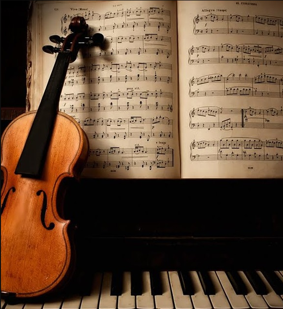
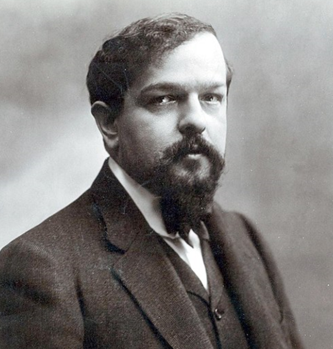
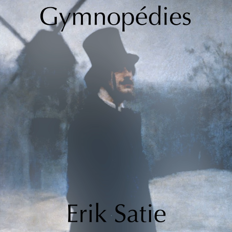

Playlist
Música Clássica
Carmina Burana - O Fortuna
Grieg - In The Hall Of The Mountain King
Prokofiev - Dance Of The Knights
Wolfang Amadeus Mozart - Lacrimosa
Tchaikovsky - Marche Slave
Franz Liszt - Hungarian Rhapsody Nº2
Franz Liszt - La Campanella
Chopin - Nocturne Op.9 No.2
Debussy - Clair De Lune

Erik Satie - Gymnopédie No.1
